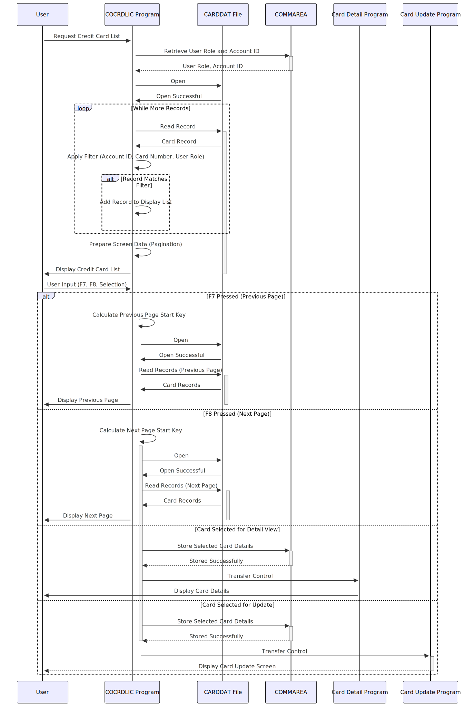

Gerado em: 1 de outubro de 2024
Título do Documento: Exibição e Navegação da Lista de Cartões de Crédito
Descrição Resumida:
Este módulo apresenta uma lista de cartões de crédito ao usuário, permitindo navegação e seleção. Administradores visualizam todos os cartões, enquanto usuários regulares veem cartões vinculados à sua conta.
Histórias do Usuário:
Como administrador de cartão de crédito, preciso visualizar uma lista de todos os cartões de crédito no sistema para gerenciá-los com eficiência.
Como usuário regular, preciso visualizar uma lista de cartões de crédito associados à minha conta para poder revisar os detalhes do meu cartão.
Épico Relacionado:
3 - Gerenciamento de Cartão de Crédito
Requisitos Funcionais:
- Controle de Acesso Baseado em Função do Usuário:
- Administradores podem visualizar todos os cartões de crédito.
- Usuários regulares só podem visualizar cartões vinculados ao seu próprio número de conta, passado para o programa por meio de uma área de comunicação (
COMMAREA).
- Exibir Lista de Cartões de Crédito:
- O programa recupera e exibe uma lista de cartões de crédito, aderindo às regras de controle de acesso.
- Paginação:
- A lista é exibida em páginas, com um número máximo de registros por página (por exemplo, 7).
- Os usuários podem navegar pelas páginas usando as teclas de função:
F7 - Página AnteriorF8 - Próxima Página
- Filtragem:
- Os usuários podem opcionalmente filtrar a lista por:
- ID da Conta: um número de 11 dígitos.
- Número do Cartão: um número de 16 dígitos.
- Seleção para Visualização Detalhada/Atualização:
- Os usuários podem selecionar um único cartão da lista para:
- Visualizar informações detalhadas do cartão (transferidas para um programa dedicado de detalhes do cartão).
- Atualizar as informações do cartão (transferidas para um programa dedicado de atualização de cartão).
Requisitos Não Funcionais:
- Desempenho: O programa deve recuperar e exibir a lista de cartões de crédito com tempo de resposta mínimo, mesmo para conjuntos de dados grandes.
- Usabilidade:
- O layout da tela deve ser claro, conciso e fácil de entender.
- As opções de navegação e filtragem devem ser intuitivas.
- Confiabilidade: O programa deve funcionar de forma confiável, tratando erros normalmente e evitando a corrupção de dados.
- Manutenibilidade: O código deve ser modular, bem documentado e fácil de entender para futuras manutenções e aprimoramentos.
Critérios de Aceitação:
- O programa exibe corretamente uma lista paginada de cartões de crédito com base na função do usuário e nos filtros aplicados.
- Os usuários podem navegar pelas páginas com sucesso usando as teclas
F7 e F8.
- A filtragem por ID de conta e/ou número do cartão funciona corretamente.
- Selecionar um cartão transfere corretamente os detalhes do cartão para o programa apropriado para visualização detalhada ou atualização.
- O programa lida com erros normalmente, exibindo mensagens informativas para o usuário.
- O programa atende às expectativas de desempenho, exibindo a lista rapidamente, mesmo com um grande número de registros de cartão de crédito.
Configurações e Constantes:
| Constante/Parâmetro |
Valor Padrão |
Descrição |
WS-MAX-SCREEN-LINES |
7 |
Número máximo de registros de cartão de crédito exibidos por página. |
LIT-CARD-FILE |
'CARDDAT ' |
Nome do arquivo VSAM que armazena os dados do cartão de crédito. |
LIT-CARD-FILE-ACCT-PATH |
'CARDAIX ' |
Nome do índice alternativo no arquivo CARDDAT, provavelmente usado para recuperação eficiente por ID de conta. |
Melhorias de Código:
- Tratamento de Erros:
- Implementar um mecanismo de tratamento de erros mais centralizado para otimizar o relatório de erros e a recuperação.
- Fornecer mensagens de erro mais específicas ao usuário, indicando a natureza do erro e as possíveis soluções.
- Estrutura do Código:
- Refatorar blocos de código repetitivos em sub-rotinas reutilizáveis para melhorar a legibilidade e a manutenção do código. Por exemplo, as seções de inicialização de array de tela e configuração de atributo podem ser simplificadas.
- Documentação:
- Adicionar comentários abrangentes para explicar a lógica do programa, as estruturas de dados e as funções.
- Criar documentação externa que descreva as especificações do programa, instruções de uso e detalhes técnicos.
- Desempenho:
- Investigar o uso de um algoritmo de classificação mais eficiente para a lista de cartões de crédito se o desempenho se tornar um problema com conjuntos de dados muito grandes.
Melhorias de Segurança:
- Criptografia de Dados:
- Criptografar informações confidenciais do cartão de crédito armazenadas no arquivo
CARDDAT para proteger contra acesso não autorizado em caso de violação de dados.
- Registro de Auditoria:
- Implementar o registro de auditoria para rastrear as ações do usuário, como visualizar, atualizar e excluir registros de cartão de crédito, para fins de segurança e conformidade.
- Validação de Entrada:
- Fortalecer a validação de entrada para os filtros de ID de conta e número do cartão para evitar possíveis ataques de injeção.
- Comunicação Segura:
- Se o programa se comunicar com outros sistemas ou bancos de dados, garantir que os canais de comunicação sejam seguros e criptografados.
Diagrama Conceitual:

–Made by “Smart Engineering” (by Compass.UOL)–